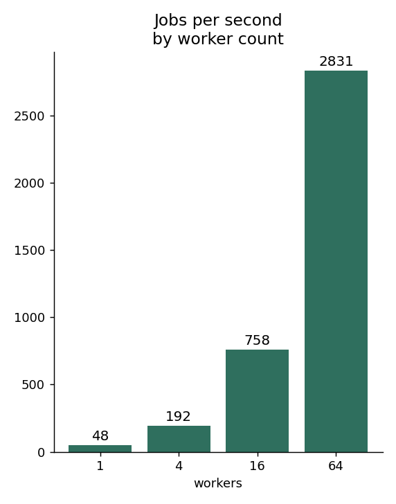
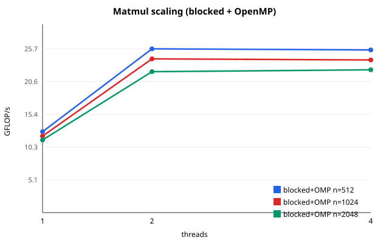

Five small systems projects, measured and honestly scoped.
Each one runs, has tests or checks, compares against a baseline, and says what it does not prove. They are learning-scale, built in one day on 2-core and laptop hardware.
All code was written with AI assistance (Instinct) under my direction. I describe what each one demonstrates, not production experience I do not have.
CPU only, no GPU resultsRaw data in every repoLimits stated per project
ML compilers
TinyFusion
A small CPU graph compiler: validates a tensor-expression graph, folds constants, removes dead code, and lowers to either one fused C loop or separate loops, then compiles with GCC. Version 2 adds opt-in common-subexpression elimination.
14.8xfused vs unfused, polynomial graph, 1M elements
0.36xfused vs unfused on the ReLU graph at 65k: fusion lost
11unit tests in v1 (v2 tests in repo)
Limits. Five operations only (input, const, add, mul, relu). Not MLIR, XLA or TVM. No reductions, matmul, dynamic shapes or GPU. Timings from a shared Xeon VM, no pinning. The ReLU case is kept because it shows fusion is not always faster.
Written with AI assistance under Jacob's direction. Shows understanding of fusion tradeoffs, not prior compiler engineering.
A single-binary job queue in Go: worker pool, retries with exponential backoff and jitter, dead-letter state, heartbeat health checks that requeue jobs from hung workers, a write-ahead log for crash recovery, and health and readiness endpoints.
754/s16 workers, 2000 jobs x 20 ms (N=3, sd 6)
80.8% to 99.9%jobs completed at 20% injected failure, retries off vs on
0 of 3000acknowledged jobs lost after kill -9 and WAL recovery
99.2% to 100%completion with 1% hung workers, health check off vs on
Limits. Work is simulated (sleeps plus injected failures) except the CPU-job test, where 16 workers on 2 cores ran slower than 2 workers (14 vs 38 jobs/s) and I have not diagnosed why. Delivery is at-least-once. State lives in one process; no multi-node scheduling, leader election or auth. The Dockerfile and Kubernetes manifest are written but were not built or applied: no container runtime was available. Single-machine numbers, 2 vCPUs.

Throughput by worker count, 2000 simulated 20 ms jobs.
Written with AI assistance under Jacob's direction. Shows I can build and load-test a retrying scheduler, not that I run clusters.
fp32 matrix multiply and a 64M-element sum in C: a naive baseline, cache tiling, and AVX2 FMA intrinsics, each checked against the baseline and timed against numpy and OpenBLAS.
27xtiled AVX2 vs naive, 1024x1024 matmul
18.8GFLOP/s, my best kernel
~6x slowerthan OpenBLAS on one thread
Limits. CPU only, no CUDA or GPU kernels. One run on a shared 2-vCPU VM; the naive baseline varied between 2.7 and 3.1 s. Tile size 64 was reasoned, not swept. Not a BLAS replacement.
Written with AI assistance under Jacob's direction. Demonstrates cache and SIMD reasoning on a CPU.
OpenMP matrix multiply and a Jacobi stencil in C, with correctness checks against serial references and thread-scaling charts.
~45xblocked + OpenMP vs naive, n=1024 (24.2 vs 0.54 GFLOP/s)
~2.0xmatmul, 1 to 2 threads
0bitwise mismatches, parallel vs serial stencil
Limits. Two vCPUs on a shared host, single node, no MPI or GPU. The 4-thread point is oversubscription, shown on purpose. The stencil's 2.7x at two threads exceeds the ideal 2.0x because of host noise; I do not claim superlinear scaling.

Blocked matmul scaling. Plateau after 2 threads is expected on 2 vCPUs.
Written with AI assistance under Jacob's direction.
Two small harnesses. A tabular Q-learning trainer on a toy grid with logged runs across 8 seeds, and a streaming Ollama client that measures time to first text and tokens per second at concurrency 1, 2 and 4.
94.7%held-out goal success vs 1.7% random (8 seeds)
~16 tok/sgpt-oss:20b, CPU only, flat across 1, 2, 4 streams
0 GPUthe inference run used CPU only, no offload
Limits. The RL task is a fixed 5x5 map, not a neural or distributed system. In the inference run all 24 streams hit the 128-token cap, only half of each group produced answer text, and tokens may include reasoning. No quality test, no GPU run, no production serving. The flat throughput fits a saturated or serialized CPU backend; it is not a hardware diagnosis.
Written with AI assistance under Jacob's direction. The inference run was made on a separate laptop and its raw logs are in the repo.